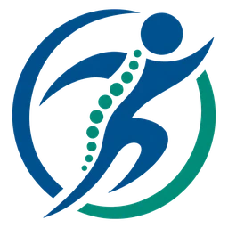
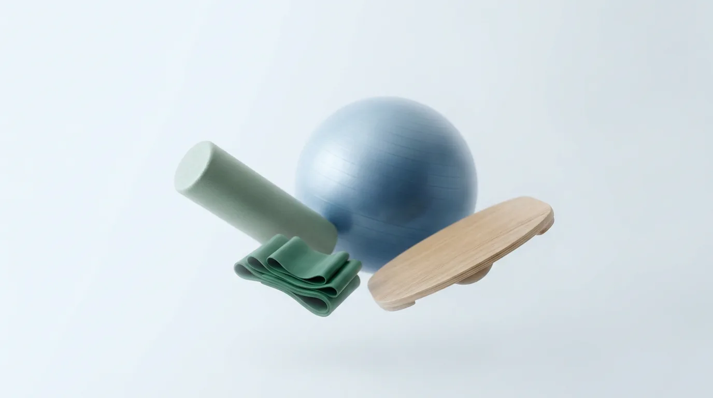
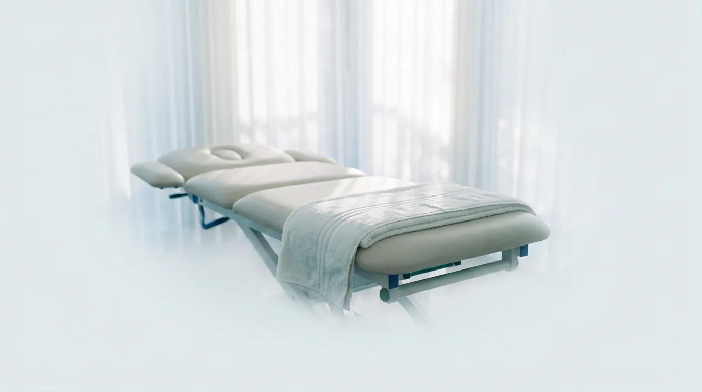

Consulta ortopédica
Para dores na coluna, no joelho, no ombro, no quadril, no tornozelo e nas mãos, e para lesões do esporte e do trabalho.

Clínica EixoClínica Eixo · Ortopedia e Fisioterapia
O ortopedista que examina você trabalha a poucos passos da equipe que vai tratar você.
Comece pela avaliação.
Agendar avaliaçãoNa Clínica Eixo, o médico ortopedista e a equipe de fisioterapia atendem no mesmo espaço. Diagnóstico e plano de reabilitação são combinados entre eles, e você não precisa levar laudo de um lugar para o outro nem repetir sua história a cada profissional.
Ortopedistas e fisioterapeutas discutem cada caso juntos. Quando a dor muda ou o tratamento precisa de ajuste, a decisão sai na hora, entre quem diagnosticou e quem está tratando.
Avaliação de dores e lesões em ossos, articulações, músculos e tendões, diagnóstico e indicação do tratamento.
Reabilitação com exercícios orientados e recursos terapêuticos, ajustada a cada etapa da recuperação.

Para dores na coluna, no joelho, no ombro, no quadril, no tornozelo e nas mãos, e para lesões do esporte e do trabalho.
Sessões para recuperar movimento, força e confiança depois de uma lesão, de uma cirurgia ou de muito tempo convivendo com dor.
Retornos com o ortopedista durante a fisioterapia, para medir a evolução e decidir a alta com segurança.
Dor na frente do joelho ao subir escadas, agachar ou passar muito tempo sentado é comum e muitas vezes envolve a articulação entre a patela e o fêmur. Se a dor dura mais de algumas semanas, ou se o joelho incha, trava ou falha, vale uma avaliação ortopédica. Na maioria dos casos o tratamento passa por fortalecimento e ajuste de carga, com fisioterapia.
Nos primeiros dias, proteger, elevar e aplicar gelo ajuda. Mas a recuperação completa depende de devolver equilíbrio e força aos músculos em volta do tornozelo, e quem pula essa etapa tem mais chance de torcer de novo. Procure atendimento se não conseguir apoiar o pé, se houver dor forte sobre o osso ou se o inchaço não diminuir.
Na maior parte das dores lombares, ficar muitos dias de repouso atrasa a melhora. Manter-se ativo dentro do limite da dor e fazer exercícios orientados costuma dar resultado melhor. Procure avaliação logo se a dor vier com formigamento ou fraqueza nas pernas, febre, perda de controle da urina ou depois de uma queda.
Conteúdo informativo. Não substitui a consulta.
Fiz a consulta e comecei a fisioterapia na mesma semana, no mesmo prédio. Não precisei ficar levando exame de um lugar para outro.
O médico e a fisioterapeuta conversavam sobre o meu caso. Quando precisei mudar os exercícios, ajustaram no mesmo dia.
Atendimento pontual e explicações claras. Eu sabia o que estava fazendo em cada sessão e por quê.
Seu plano não está na lista? Mande o nome pelo WhatsApp e confirmamos a cobertura para consulta e fisioterapia.
Consultar meu plano